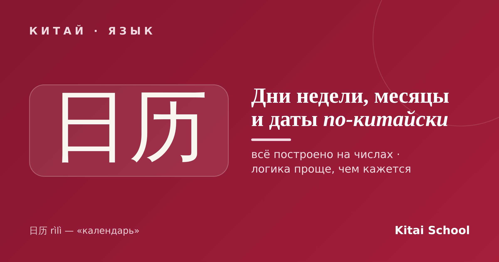
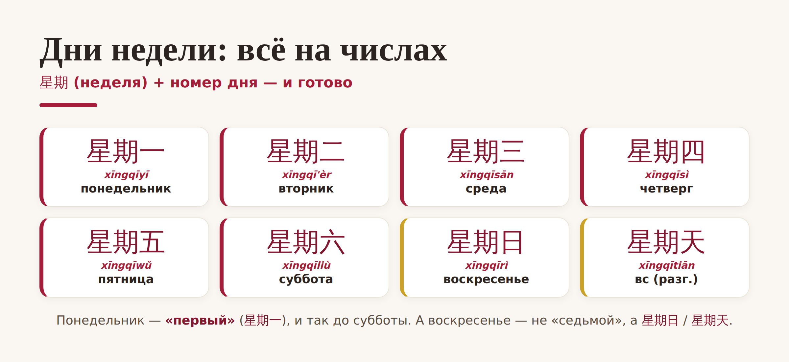
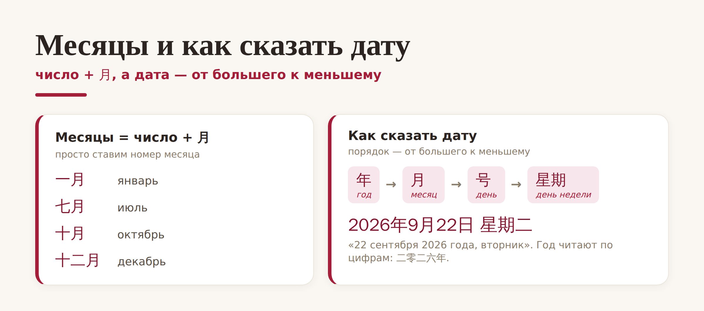

Китай · язык

Хорошая новость для всех, кто учит язык: даты — одна из самых лёгких тем в китайском. Никаких «сентября» и «пятого» в родительном падеже: почти всё строится на простых числах. Разберём дни недели на китайском, месяцы по-китайски и то, как сказать дату, — и вы удивитесь, насколько это логично.
Начнём с самого приятного. Слово «неделя» — 星期 (xīngqī), а дни недели на китайском делаются так: берём 星期 и добавляем номер дня. Понедельник — «первый», вторник — «второй», и так далее:

Единственное, что нужно запомнить отдельно, — воскресенье. Оно не «седьмое», а 星期日 (xīngqīrì) или, в разговорной речи, 星期天 (xīngqītiān). Ещё есть короткий вариант: вместо 星期 часто говорят 周 (zhōu) — 周一 «понедельник», 周日 «воскресенье».
С месяцами ещё проще — тут вообще нечего заучивать. Месяцы по-китайски — это просто номер месяца + 月 (yuè, «месяц»). Январь — «первый месяц», февраль — «второй», декабрь — «двенадцатый»:

То есть 一月 — январь, 五月 — май, 十月 — октябрь, 十二月 — декабрь. Выучили числа до двенадцати — знаете все месяцы по-китайски. Согласитесь, это куда проще, чем в русском.
Осталось собрать всё вместе. Главное правило, как сказать дату по-китайски: порядок идёт от большего к меньшему — сначала год, потом месяц, потом число, а день недели в конце. Ровно наоборот по сравнению с нашим «22 сентября 2026-го».
Число месяца обозначают словом 号 (hào) в разговоре или 日 (rì) в официальных текстах. А год не «разбивают» на тысячи и сотни, а просто читают по цифрам: 2026年 — это 二零二六年 (èr líng èr liù nián), «два-ноль-два-шесть год». Полная дата выглядит так: 2026年9月22日星期二 — «22 сентября 2026 года, вторник».
На каждый день. Запомните три слова, и расписание станет понятным без словаря: 今天 (jīntiān) — сегодня, 明天 (míngtiān) — завтра, 昨天 (zuótiān) — вчера. С ними и датами вы уже сможете договориться о встрече.
Вот и вся система: дни недели на китайском — это 星期 плюс число, месяцы по-китайски — число плюс 月, а дата собирается от большего к меньшему. Одна из тех тем, которые в китайском реально проще, чем кажется.
Удачной вам недели! 天天开心。